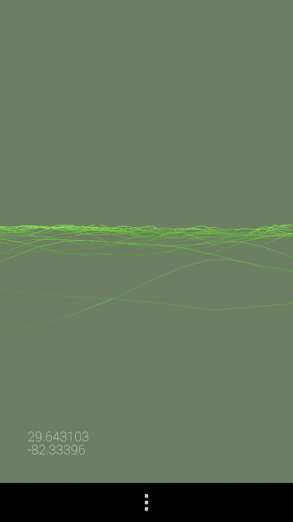
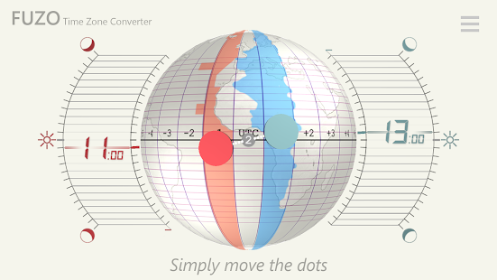
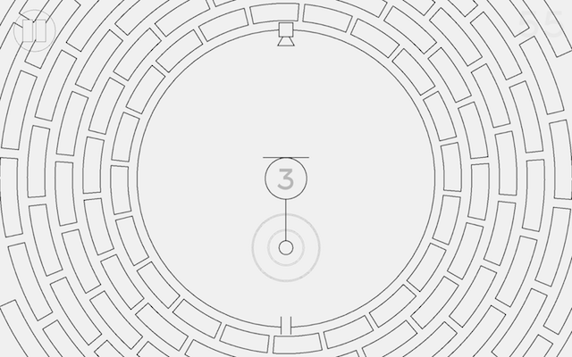
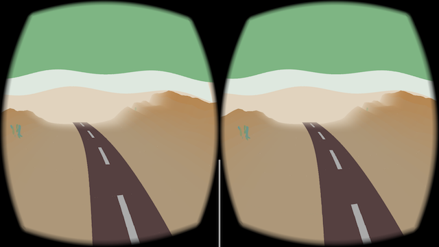

This is a growing selection of projects and apps created with Processing for Android (ordered alphabetically). Suggest a new project by writing to android@processing.org or by tweeting to @p5android!
APDE
By William Smith

APDE (Android Processing Development Environment) is an integrated development environment for creating Processing sketches on your phone/tablet. APDE supports the full edit, compile, and run cycle. You don't need a computer or an SDK to start coding on the go.
Links: Google Play, source code
B-RU Receiving message
By Bruno Ruchiga

A short game about an astronaut with low battery and low signal, searching for new messages. Developed for Global Game Jam 2018.
Links: Google Play
Bug Rope
By Evan Shellshear

A kids game where the player is challenged by a bug invasion.
Links: Google Play, web
Cardinality of Singular Place
By Penelope Umbrico

Cardinality of Singular Place uses your current GPS coordinates to generate a unique, location-specific abstract landscape.
Links: Google Play
DISOBEDIENCE
By Jean-Michel Rolland
Generative music box played live by your device.
Links: Google Play, web
Elements
By LIA

Elements is a playful application that lets you create intricate patterns, by combining shape creation with movement and rotation controls.
Links: Google Play, Android Experiments page, source code
Fuzo - Time Zone Converter
By Rich Porcher

Time zone converter app with a 3D interface.
Links: Google Play, web
Game of Life HD
By Eduardo Moriana

GPU implementation of Conway's Game of Life cellular automaton, including multitouch support.
Links: Google Play, web
Generative Music Patterns
By Jean-Michel Rolland

Collection of generative music patterns created at a web residency by Solitude and ZKM.
Links: Google Play, web
Kōan
By Rich Porcher

Kōan is a drawing, most certainly a plan. And the architect wants you to break it. Softly, methodically, the way you would hit the keys of a piano if you were alone and serene.
Links: Google Play
La Révolution des Ténèbres
By Fran Lejeune and Jean-Michel Rolland

La Révolution des Ténèbres is a science fiction interactive multimedia book, loosely based on the life of painter Caravaggio.
Links: Google Play, video documentation
Look up
By Ekene Ijeoma

Look Up is a participatory public art app that prompts New Yorkers to look away from their phones and into the street intersections to embrace the diversity and engage in the serendipity of the city.
Links: Google Play, Android Experiments page, source code
Material Life
By Juanky Soriano

Material Life is the first Game of Life simulator making use of Material Design practices in our Android Devices. Uses Rainbow, a fork of Processing for Android, for drawing.
Links: Google Play, Android Experiments page, source code
MusicBox3D
By Bérenger Recoules

Simulation of music box, in which each time a cube executes a full revolution it emits a note.
Links: Google Play, web
Octagon
By Tailor & Wayne

In this game, rotate your device to move the flying squirrel inside a 360º octagonal barrel while avoiding the obstacles.
Links: Google Play, web
Orbit Simulator
By Tailor & Wayne

Reproduce the laws of gravity using your fingers and the accelerometer, and generate patterns of moving asteroids.
Links: Google Play, web
Origami Pixels
By Kelley van Evert

Turn 2D patterns into 3D objects.
Links: Google Play, web
Pflow
By Gabriel Weymouth

Interactive visualization of fluid flow.
Links: Google Play, web
Phase Pendulum
By Bérenger Recoules

Audio-visual synthetizer based on harmonic motion.
Links: Google Play, web
Springs
By Bérenger Recoules

This application is a unique mutli-touch music instrument to make drone sounds.
Links: Google Play, source code, web
Running Tree
By Andres Colubri

A watch face that grows a tree as the step count increases. The tree blooms when the count approaches 10,000 steps.
Links: Google Play, source code
Survive the Minotaur's labyrinth
By the Wrath Of The Platypi

Adventure game with traps, weapons, magic, monsters, zombies & allies.
Links: Google Play, Facebook page
Swarmpaint
By Josh Giesbrecht

A generative drawing app for Android devices. Lines are created by particles that react to your touch in customizable (and generally weird) ways.
Links: Google Play, web
Tumbler Shooter
By Camaris

Experimental shooter game.
Links: Google Play
VR Audioscape
By Sara Di Bartolomeo

VR Audioscape is a VR application that lets you travel through a procedural landscape generated according to music. Play any music from any app on your phone, then run the app: it will automatically use as input any sound coming as output from the phone.
Links: Google Play, source code
VR Draw
By Andres Colubri

This VR app for Cardboard or Daydream headsets allows users to make drawings in VR using their gaze, and then to fly through them.
Links: Google Play, source code